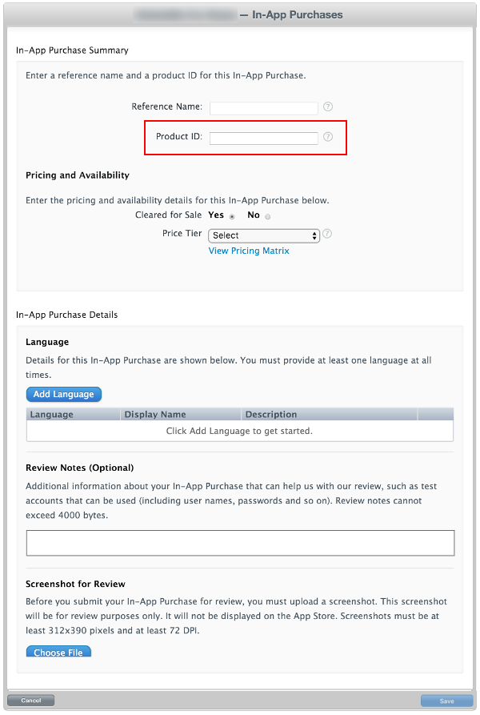

This guide describes the process of establishing the digital records and relationships necessary for a Unity game to interact with an In-App Purchase Store. The Unity IAPSee IAP More info See in Glossary purchasing API is targeted.
In-App Purchase (IAP) is the process of transacting money for digital goods. A platform’s Store allows purchase of Products, representing digital goods. These Products have an Identifier, typically of string datatype. Products have Types to represent their durability: subscription, consumable (capable of being rebought), and non-consumable (capable of being bought only once) are the most common.
Specify the Product Identifier, and complete other fields as requested.
NOTE: The “Product ID” here is the same identifier used in the game source code, added to the Unity IAP ConfigurationBuilder instance via AddProduct() or AddProducts().
NOTE: When targeting multiple Apple device groups (for example, shipping on both iOS and Mac) Apple requires usage of different, unique product identifiers for each distinct device group. Use Unity IAP’s Purchasing.IDs class and define a one-to-many mapping Product IDs to the store-specific identifiers, and pass that mapping in when initializing IAP.

Result:
Test IAP
Create Sandbox Testers using iTunes Connect for use on your test device’s iTunes Account. To do this, navigate to iTunes Connect > Users and Roles, and choose the plus (“+”) button. You must review Apple’s Sandbox Tester documentation as there are several additional important usage notes, and you must use a real email address to create Testers.
TIP: (*) To simplify managing the email address, use an email service capable of sub-addressing (emailaccount+subaddress@example.com) such as Gmail, iCloud, and Outlook.com. This allows one email account to receive email for multiple sub-addresses.
Walk through the user creation wizard.
Build the Xcode project for your game using Unity.
NOTE: Ensure the Bundle Identifier in Unity (Build Settings > iOS > Settings … > Other Settings > Bundle Identifier) matches that used in iTunes Connect.
Then, in your game’s Xcode project, ensure the Team (Project Navigator > your game Target > General > Identity > Team) is set to that of your Apple Developer account.
For iOS
Using the target iOSApple’s mobile operating system. More info See in Glossary device, sign out of any existing Apple ID accounts. Only sign in as the Sandbox Tester when prompted by the app, later. Any subsequent purchases are routed through the Apple Sandbox instead of the Production Store.
Build and run the game on your iOS device. UnityPurchasing.Initialize() succeeds if everything has been correctly configured. See Unity Purchasing Initialization
Test the IAP by making a purchase in the game on the device. A modified purchase dialog displays, explaining that this purchase is being performed in the Sandbox Environment. Use the Sandbox User Tester password when prompted for purchase.
WARNING: If the indicator is not present, then an account is charged real money for the product.
For Mac
When building a desktop Mac build, select Mac App Store Validation within Unity’s Mac Player SettingsA settings manager that lets you set various player-specific options for the final game built by Unity. More info See in Glossary.
Once you have built your App, update its info.plist file with your bundle identifier and version strings. Right click on the .app file and click Show Package Contents, locate the info.plist file and update the CFBundleIdentifier string to your application’s bundle identifier.
Sign, package, and install your application. Run the following commands from an OSX terminal, filling in “your.app” and “your.pkg” appropriately.
TIP: To sign the bundle, you may first need to remove the Contents.meta file if it exists: your.app/Contents/Plugins/unitypurchasing.bundle/Contents.meta
codesign -f --deep -s "3rd Party Mac Developer Application: " your.app/Contents/Plugins/unitypurchasing.bundle
codesign -f --deep -s "3rd Party Mac Developer Application: " your.app
productbuild --component your.app /Applications --sign "3rd Party Mac Developer Installer: " your.pkg
To install the package correctly, delete the unpackaged .app file before running the newly created package and installing it.
Launch the app from the Applications folder. The first time you do so, you are prompted to enter your iTunes account details, for which you can then make test purchases against the sandbox environment.
Is something described here not working as you expect it to? It might be a Known Issue. Please check with the Issue Tracker at issuetracker.unity3d.com.
Thanks for letting us know! This page has been marked for review based on your feedback.
If you have time, you can provide more information to help us fix the problem faster.
You've told us this page needs code samples. If you'd like to help us further, you could provide a code sample, or tell us about what kind of code sample you'd like to see:
You've told us there are code samples on this page which don't work. If you know how to fix it, or have something better we could use instead, please let us know:
You've told us there is information missing from this page. Please tell us more about what's missing:
You've told us there is incorrect information on this page. If you know what we should change to make it correct, please tell us:
You've told us this page has unclear or confusing information. Please tell us more about what you found unclear or confusing, or let us know how we could make it clearer:
You've told us there is a spelling or grammar error on this page. Please tell us what's wrong:
You've told us this page has a problem. Please tell us more about what's wrong:
Thanks for helping to make the Unity documentation better!